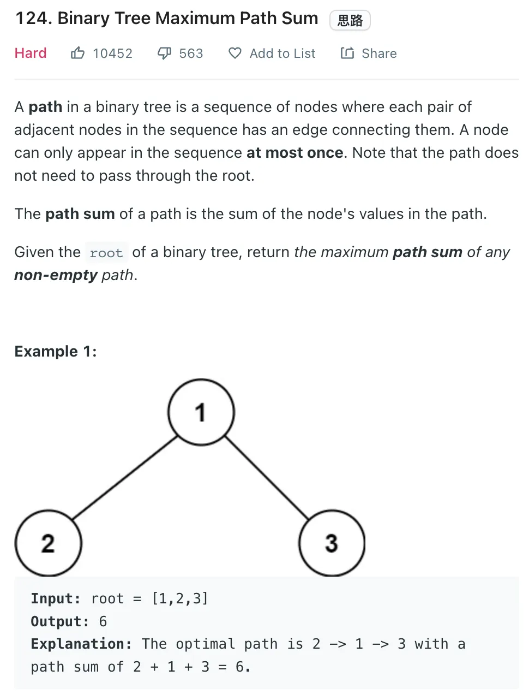
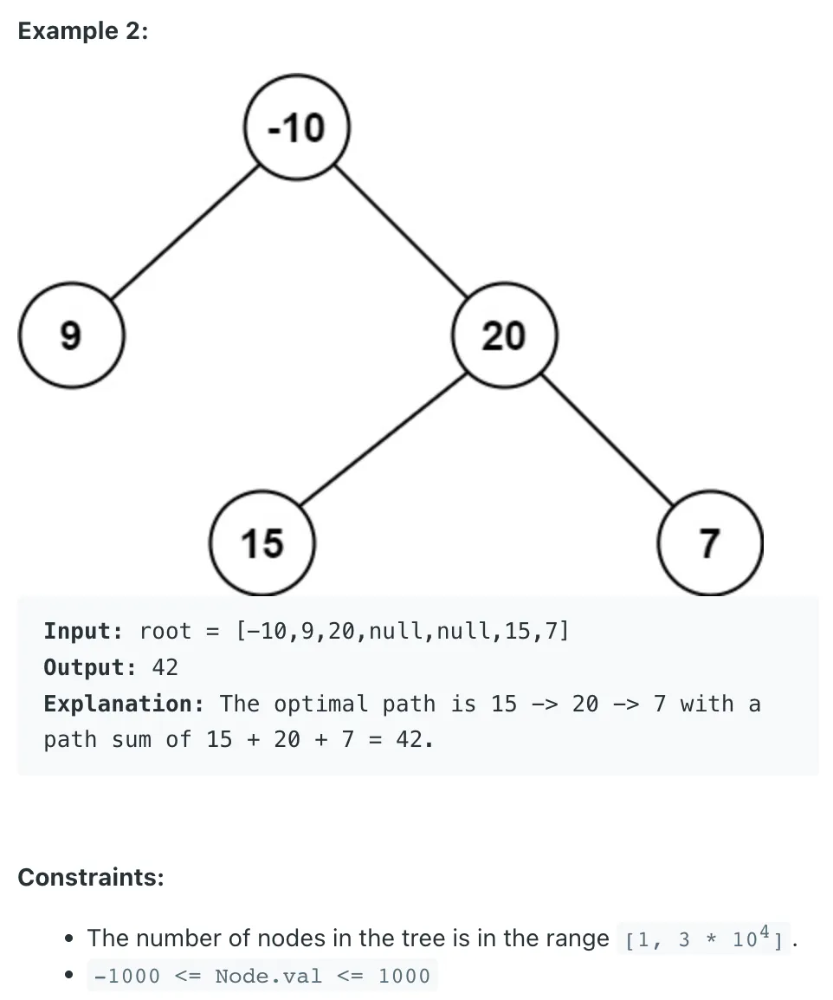

124. Binary Tree Maximum Path Sum
考過的公司：Bytedance、Shopee、tiktok
Question


✍🏽 My Solution
Solution #1 [DFS]
Runtime: 1 ms, faster than 99.67% of Java online submissions for Binary Tree Maximum Path Sum. Memory Usage: 47.9 MB, less than 46.09% of Java online submissions for Binary Tree Maximum Path Sum.
class Solution {
int max = Integer.MIN_VALUE;
public int maxPathSum(TreeNode root) {
dfs(root);
return max;
}
// dfs 返回以该节点为端点的最大路径和
public int dfs(TreeNode root) {
if (root == null) return 0;
int left = Math.max(dfs(root.left),0);
int right = Math.max(dfs(root.right),0);
int innerSum = left + root.val + right; //当前子树内部的最大路径和
max = Math.max(max, innerSum);
//只返回包含当前根节点和左子树或者右子树的路径
return root.val + Math.max(left, right);
}
}
Explanation (in my words)
- How does their solution work?
- 当前节点有四个选择： 1）独立成线，直接返回自己的值 2）跟左子节点合成一条路径 3）跟右子节点合成一条路径 4）以自己为桥梁，跟左、右子节点合并成一条路径